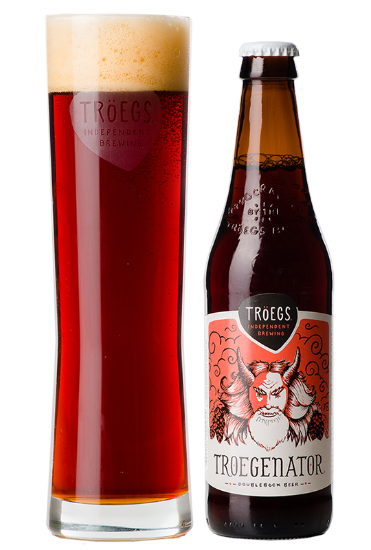

HOME
OUR PICKS
Troegenator Double Bock
Troegs Independent Brewing Co.
No food? No problem. Just drink a Double Bock. Thick and chewy with intense notes of caramel, chocolate and dried stone fruit, ‘Nator (as we call him) serves as a tribute to this liquid bread style.
Located in Hershey, PA, the Tröegs community morphed into a home for kindred spirits with wide and varying ideas, which partly explains the Tröegs portfolio of tangential offerings. In a very real way every beer at Tröegs is a Scratch Series beer – a random concept the brothers hatched for their 10th anniversary that still serves as the launching point for new beers.
Check out their site HERE 